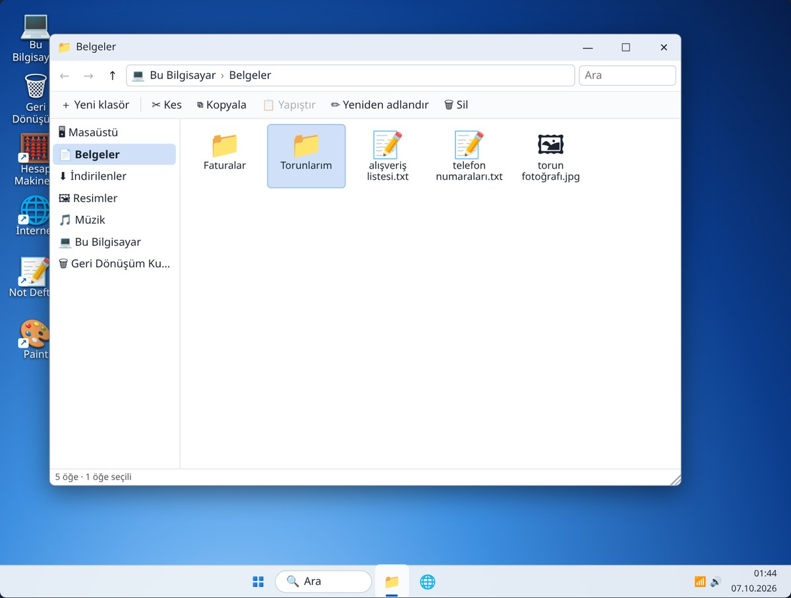
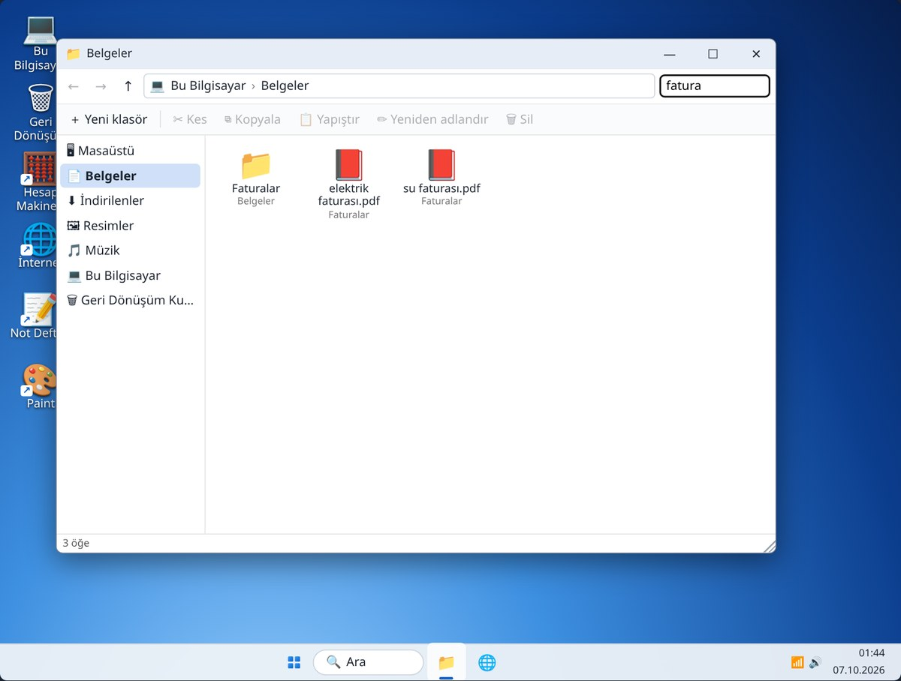
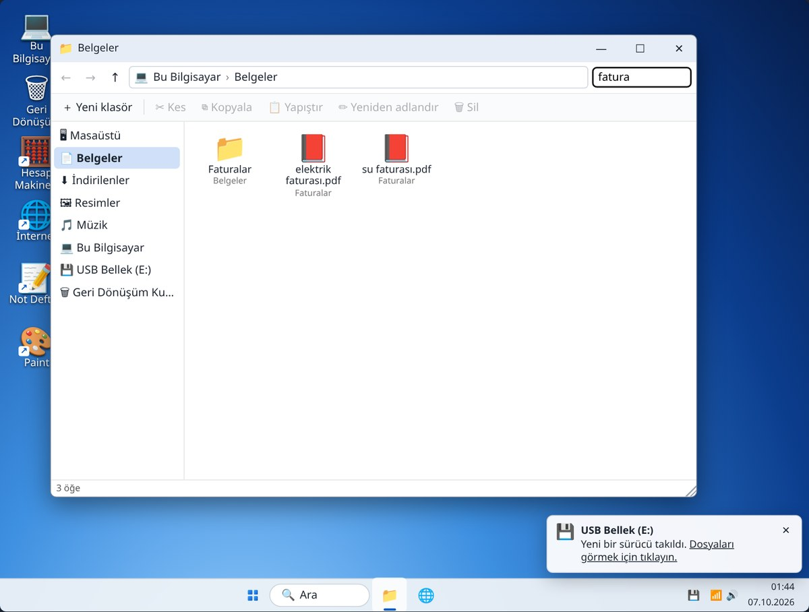
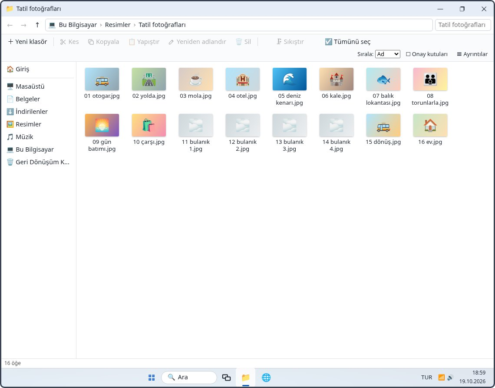
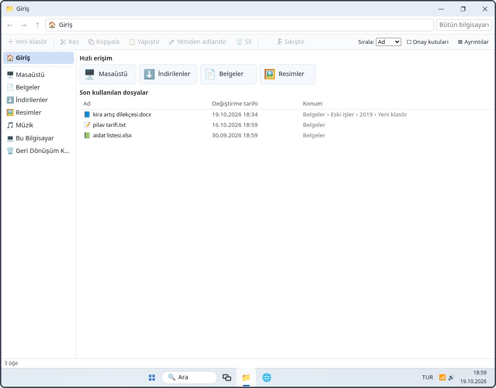

6. Hafta: Dosyalar ve klasörler
Alıştırmalar
Bu hafta
| 1 Dosyalar ve klasörler | 30 dk |
|---|---|
| 2 Dosya türleri ve uzantılar | 20 dk |
| 3 Resim ve web dosyaları: PNG, JPG, HTML | 40 dk |
| 4 Klasör içinde klasör | 25 dk |
| 5 Fotoğraflarla çalışmak | 25 dk |
| 6 Birden çok dosya seçmek | 20 dk |
| 7 Kayıp dosyayı bulmak | 20 dk |
|---|---|
| 8 Sıkıştırılmış (zip) dosyalar | 30 dk |
| 9 Geri Dönüşüm Kutusu | 20 dk |
| 10 Dosya parkuru | 25 dk |
| 11 Ne yapardınız? Dosya durumları | 20 dk |
Hafta sonunda: ödev (gerçek bilgisayarda sekiz küçük görev) ve 12 soruluk test.
Ders 1 · Dosyalar ve klasörler
Ders 1 · Alıştırma 1
| Yeni klasör | Üstteki ＋ Yeni klasör’e tıklayın, adı seçili gelir: Torunlarım yazıp Enter. |
|---|---|
| Ad değiştir | alışveriş listesi’ne bir kez tıklayın, F2 tuşuna basın, market listesi yazıp Enter. |
Dosyanın adı değişir; içindeki yazı aynı kalır.

Ders 1 · Alıştırma 2
| Taşı | torun fotoğrafı’nı tutup Torunlarım klasörünün üzerine sürükleyin. Klasör maviye boyanınca bırakın. |
|---|---|
| Geri | Sol üstteki ← okuna tıklayın: bir önceki klasöre dönersiniz. |
| Kopyala | telefon numaraları’nı seçin → Kopyala (Ctrl + C) → Masaüstü’ne gidin → Yapıştır (Ctrl + V). |
Taşımada dosya yer değiştirir. Kopyalamada asıl dosya yerinde kalır, bir kopyası oluşur.
Ders 1 · Alıştırma 3
Yanlışlıkla silmelerde bu kutu bir can simididir. Kutuyu boşaltırsanız içindekiler tamamen silinir.
Ders 1 · Alıştırma 4

Ders 1 · Alıştırma 5
| Tak | USB belleği bilgisayara takın: soldaki listeye USB Bellek (E:) eklenir. |
|---|---|
| Kopyala | Resimler’deki tatil fotoğrafını USB’nin üzerine sürükleyin. Farklı sürücüye sürüklenen dosya kopyalanır. |
| Çıkar | Çekmeden önce ⏏ Çıkar. “Artık çıkarılabilir” yazısını görünce çekin. |

Ders 2 · Dosya türleri
| .txt | Düz yazı (Not Defteri) |
|---|---|
| .docx | Word belgesi |
| Değiştirilmeyen belge: fatura, dilekçe, e-Devlet çıktısı | |
| .jpg / .png | Fotoğraf, resim |
| .mp3 / .mp4 | Müzik / video |
| .zip | Sıkıştırılmış paket: içinde birçok dosya |
| .exe | Program! Tanımadığınız yerden geldiyse açmayın |
Ders 3 · Resim ve web dosyaları
| JPG (JPEG) | Fotoğraflar için: küçük boyutlu, çok renkli |
|---|---|
| PNG | Çizim, logo, ekran alıntısı, yazılı görsel: net kenarlı, kayıpsız |
| GIF | Kısa hareketli resimler |
| BMP | Eski ve çok yer kaplar; kullanmayın |
| Kayıt türü | Kaydet penceresinde uzantıyı belirler: PNG, JPEG, Tüm Dosyalar |
| 1 | Not Defteri’ne yazın: <h1>Merhaba</h1> ve <p>Bu benim ilk web sayfam.</p> |
|---|---|
| 2 | Ctrl + S: Kayıt türü Tüm Dosyalar, ad sayfam.html (yoksa sonuna .txt eklenir). |
| 3 | Belgeler’de sayfam.html’e çift tıklayın: tarayıcı sayfayı çizer. |
| 4 | Ctrl + U: sayfanın kaynağı, yani yazı hâli. |
< ve >: Z’nin solundaki tuş (> için Shift ile). Fotoğraf göndermek için JPG, ekran alıntısı için PNG.
Ders 4–5 · Klasörler ve fotoğraflar
| İç içe klasör | Belgeler › Ev › Faturalar: dolap → çekmece → dosya |
|---|---|
| Adres çubuğu | Neredeyim? Bir ada tıklayınca o klasöre döner |
| ← Geri | Bir önceki klasör |
| Ara | İçteki bütün klasörlere de bakar |
| 🖼 Resimler | Fotoğrafların durduğu klasör |
|---|---|
| Çift tık · ◀ ▶ | Fotoğrafı açar · önceki / sonraki |
| ＋ / － | Yakınlaştır / uzaklaştır |
| Sağ tık | Masaüstü arka planı olarak ayarla |
| Ctrl + C → Ctrl + V | Albüm klasörüne kopyalar; asılları yerinde kalır |
Ders 6 · Birden çok dosya seçmek
| Ctrl + tık | Cımbız gibi: aradan istediklerinizi tek tek seçer |
|---|---|
| Shift + tık | İlk tıkladığınızdan ikinciye kadar aradakilerin hepsi |
| Boş yerden sürükleyin | Çerçevenin içine giren her şey seçilir |
| Ctrl + A | Klasördeki her şey |
| ☐ Onay kutuları | Tuşa basmadan, kutucuklarla seçmek |
Seçim duruyorken Ctrl + C ya da Delete: hepsine birden uygulanır. 3., 17. ve 42. fotoğraf: Ctrl. 1’den 20’ye: Shift.

Ders 7 · Kayıp dosya
| 1 | 📁 Dosya Gezgini → 🏠 Giriş: son açılan ve kaydedilen dosyalar en üstte; yanında konumu yazar. |
|---|---|
| 2 | Dosyaya sağ tık → Dosya konumunu aç. |
| 3 | Bu Bilgisayar’dayken Ara kutusuna adının bir parçasını yazın: bütün klasörlere bakar. |
| 4 | Sırala: Tarih: en yeni en üstte, “Bugün”, “Dün” diye gruplanır. |
| 5 | İnternetten indirdiyseniz tarayıcıda Ctrl + J → Klasörde göster. |
Kaydederken pencerenin üstündeki klasör adına bakın; emin değilseniz Belgeler’i seçin.

Ders 8–9 · Zip ve Geri Dönüşüm Kutusu
| ☰ Ayrıntılar | Boyut, tarih, tür sütun sütun; başlığa tıklayınca sıralar |
|---|---|
| .zip | Birden çok dosyanın küçültülmüş paketi |
| Tümünü ayıkla | Zip’in içindekileri normal bir klasöre çıkarır |
| Klasöre sağ tık | Sıkıştırılmış (zip) klasöre gönder: klasör tek dosya olur (e-postayla göndermek için) |
| Silmenin üç yolu | Kutuya sürükle · Delete · sağ tık → Sil |
|---|---|
| ♻ Geri yükle | Dosyayı eski yerine koyar |
| Kutuyu boşalt | İçindekiler tamamen silinir; geri gelmez |
USB bellekten silinen dosya kutuya gitmez, doğrudan silinir. Önemli dosyaların yedeğini alın.
Ders 10–11 · Tekrar
| Dosya parkuru | Dağınık Belgeler’i toparlayın: Sağlık klasörü, taşıma, silineni geri getirme, ad değiştirme, USB’ye yedek, güvenle çıkarma. |
|---|---|
| Torunun USB’si | Fotoğrafları Resimler’e kopyalayın; aslı USB’de kalsın. |
| “Biçimlendirmeniz gerekiyor” | Basmayın: içindekiler silinir. İptal deyip danışın. |
| Disk dolu | İndirilenler’i ve kutuyu temizleyin, büyük videoları USB’ye taşıyın. |
| Dosya adında olmaz | \ / : * ? " | |
Aynı klasöre yapıştırınca Windows ada “- Kopya” ekler; iki dosya birbirinden bağımsızdır.
Özet
| ＋ Yeni klasör | Boş klasör; adını hemen yazın |
|---|---|
| F2 | Seçili dosyanın adını değiştir |
| Sürükle-bırak | Klasöre taşı (USB’ye sürüklemek kopyalar) |
| Ctrl + C → Ctrl + V | Dosyayı kopyala-yapıştır |
| Delete · ♻ Geri yükle | Sil · silineni geri koy |
| ⏏ Çıkar | USB belleği çekmeden önce |
| Uzantı | .pdf, .jpg, .zip…; .exe programdır |
|---|---|
| JPG · PNG | Fotoğraf · ekran alıntısı, çizim |
| Adres çubuğu | Belgeler › Ev › Faturalar |
| Ctrl + tık · Shift + tık | Tek tek · aradaki hepsi |
| 🏠 Giriş · Sırala: Tarih | Kayıp dosyayı bulmak |
| Tümünü ayıkla | Zip paketini açmak |
Ödev: kendi bilgisayarınızda sekiz küçük görev; ödev kâğıdı yazdırılabilir. Test: 12 soru, tekrar içindir.